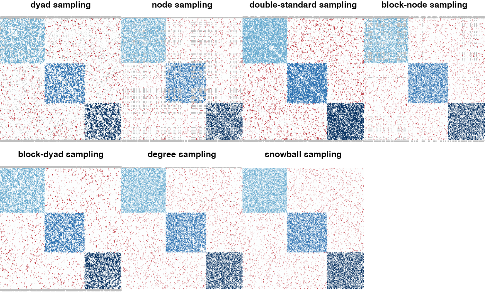

sample.RdThis function samples observations in an adjacency matrix according to a given sampling design. The final results is an adjacency matrix with the dimension as the input, yet with additional NAs.
sample(adjacencyMatrix, sampling, parameters, clusters = NULL, covariates = NULL, similarity = l1_similarity, intercept = 0)
| adjacencyMatrix | The N x N adjacency matrix of the network to sample. If |
|---|---|
| sampling | The sampling design used to sample the adjacency matrix, see details |
| parameters | The sampling parameters adapted to each sampling |
| clusters | An optional clustering membership vector of the nodes, only necessary for block samplings |
| covariates | A list with M entries (the M covariates). If the covariates are node-centred, each entry of |
| similarity | An optional function to compute similarities between node covariates. Default is |
| intercept | An optional intercept term to be added in case of the presence of covariates. Default is 0. |
an object with class sampledNetwork containing all the useful information about the sampling.
Can then feed the estimate function.
The different sampling designs are split into two families in which we find dyad-centered and node-centered samplings. See <doi:10.1080/01621459.2018.1562934> for complete description.
Missing at Random (MAR)
"dyad": parameter = p $$p = P(Dyad (i,j) is sampled)$$
"node": parameter = p and $$p = P(Node i is sampled)$$
"covar-dyad": parameter = beta in R^M and $$P(Dyad (i,j) is sampled) = logistic(parameter' covarArray (i,j, ))$$
"covar-node": parameter = nu in R^M and $$P(Node i is sampled) = logistic(parameter' covarMatrix (i,)$$
Not Missing At Random (NMAR)
"double-standard": parameter = (p0,p1) and $$p0 = P(Dyad (i,j) is sampled | the dyad is equal to 0)=$$, p1 = P(Dyad (i,j) is sampled | the dyad is equal to 1)
"block-node": parameter = c(p(1),...,p(Q)) and $$p(q) = P(Node i is sampled | node i is in cluster q)$$
"block-dyad": parameter = c(p(1,1),...,p(Q,Q)) and $$p(q,l) = P(Edge (i,j) is sampled | node i is in cluster q and node j is in cluster l)$$
"degree": parameter = c(a,b) and $$logit(a+b*Degree(i)) = P(Node i is sampled | Degree(i))$$
The class sampledNetwork
## SBM parameters directed <- FALSE N <- 300 # number of nodes Q <- 3 # number of clusters alpha <- rep(1,Q)/Q # mixture parameter pi <- diag(.45,Q) + .05 # connectivity matrix ## simulate a SBM without covariates sbm <- missSBM::simulate(N, alpha, pi, directed) ## Sample network data # some sampling design and their associated parameters sampling_parameters <- list( "dyad" = .3, "node" = .3, "double-standard" = c(0.4, 0.8), "block-node" = c(.3, .8, .5), "block-dyad" = pi, "degree" = c(.01, .01) ) sampled_networks <- list() for (sampling in names(sampling_parameters)) { sampled_networks[[sampling]] <- missSBM::sample( adjacencyMatrix = sbm$adjacencyMatrix, sampling = sampling, parameters = sampling_parameters[[sampling]], cluster = sbm$memberships ) }## SSOOOO long, but fancy old_par <- par(mfrow = c(2,3)) for (sampling in names(sampling_parameters)) { plot(sampled_networks[[sampling]], clustering = sbm$memberships, main = paste(sampling, "sampling")) }par(old_par)